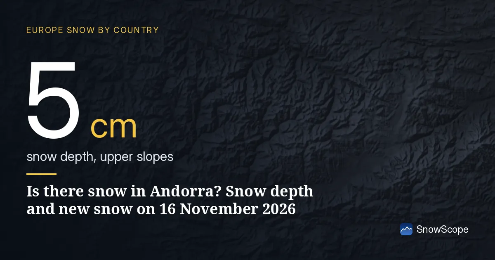

Andorra 2 %, France 11 %: snow divide on the ridge
Andorra and France show a sharp contrast in early snow cover on 16 November: 2 % for Andorra, 11 % for France. The divide reflects how the southern Pyrenees catch less autumn moisture than the northern Alps; Andorra must wait for December's systems to build a base.
See the live snow forecast for Pal-Arinsal in the SnowScope appSnow depth, powder alerts and the 3D map, free.
Why Andorra is so dry now
In mid-November, Andorra typically carries thin snow at high elevation only. The Pyrenees here catch less autumn moisture than regions to the north. France's Alps, which sit further north and higher on average, intercept more Atlantic systems. That is why Les Arcs already has 94 cm while our best sites hold 5 cm. Working in dry mountains like these—at the edge of the main moisture belt—I see this pattern often. Snow will come to Andorra, but not yet. December is when the real accumulation starts.
| Country | White | Deepest resort | Next 7 days |
|---|---|---|---|
| Andorra | 2 % | Pal-Arinsal | 7 cm |
| Spain | 0 % | Aramón Cerler | 4 cm |
| France | 11 % | Les Arcs | 105 cm |

Spain and France: the wider picture
Spain lies even drier than Andorra: 0 % white cover, with Aramón Cerler at only 17 cm. France is the leader. Les Arcs has 94 cm and may see 105 cm in the next week if forecasts hold. That jump is driven by deep low-pressure systems moving from the Atlantic. Andorra will catch some of that moisture, but the shadow effect means we always lag. The gap should narrow by Christmas if systems arrive on schedule. For now, France is in a different season.
Where snow clings in Andorra
Pal-Arinsal leads with 5 cm depth and 5 cm new snow in 72 hours. Ordino-Arcalis also shows 5 cm depth, with 4 cm new, and reaches 2626 m. Below 2000 m, nothing on the model. The 2000–2500 m band carries 1 % cover. Above 2500 m, 9 % of terrain is white—patchy and thin, mostly bare rock showing through. This is not ski-ready snow. It is a marker: moisture is arriving, but sparsely and high. If you go off-piste now, understand you are walking on bare ground with scattered firm patches in protected hollows.
What the next week will bring
Fresh snow is forecast to arrive 18 November. The 19th looks to be the snowiest day, with 5 cm possible. By the end of the next three days, 5 cm could fall; by seven days out, 7 cm is possible. Still thin, but the trend is upward. The week after (24–30 November) shows real potential in the models: 21 cm possible. If those forecasts hold, Andorra enters December with a usable base. France will stay ahead, but the gap will shrink.
How fast it melted
Seven days ago, 90 km² of Andorra carried snow. Today, 10 km². An 80 km² loss in one week shows the fragility of early season. Warm days above 2000 m have eaten most of it. This is typical for dry mountains in autumn: snow falls, then vanishes until the sun angle drops in late November.
Snow by height
Below 1500 m: bare ground. 1500–2000 m: nothing. 2000–2500 m: 1 % cover. Above 2500 m: 9 % white. This layered pattern is typical. High peaks hold the early snow; valleys stay dry. As November progresses and pressure systems move in, that threshold will descend. By mid-December, if forecast snow arrives, the 2000 m line could carry a usable base. For now, the mountains are split: white above, bare below.
Tips for skiers
- If you hike above 2500 m in the next two days, probe carefully for hidden snow under scree and grass; early-season patches are firm and easy to miss underfoot.
- The 18–19 November system is worth watching. If it delivers its forecast 5 cm, high terrain may become more stable by the following week.
- Check the official avalanche forecast before any off-piste work; thin snow on steep slopes bonds weakly to rock.
- Deep snow appears first in France (Les Arcs at 94 cm); Andorra should catch up by late November if forecasts hold.
- The 24–30 November forecast calls for 21 cm—a deeper system that could transform early December. If it fails, the season will start late.
About these numbers
Resort snow depths are the deepest snow on the resort's upper slopes from the SnowScope snow model (about 1 km, run of 16 November); they are estimates for an area, not a measurement at one point. Station values are measurements on the date shown. Forecasts can change. Always read the official avalanche bulletin before going off-piste.
Cite this report
For research, teaching or the press: the numbers and charts are free to reuse under CC BY 4.0 with this citation.
SnowScope (2026), Andorra 2 %, France 11 %: snow divide on the ridge, https://snowscope.app/blog/en/2026/11/andorra-snow-report-16-november-2026.html, accessed 2026-11-16
SnowScope (Atlas Labs). (2026, November 16). Andorra 2 %, France 11 %: snow divide on the ridge. SnowScope snow reports. https://snowscope.app/blog/en/2026/11/andorra-snow-report-16-november-2026.html
BibTeX
@misc{snowscope2026andorrasnowreport16novem,
author = {{SnowScope (Atlas Labs)}},
title = {Andorra 2 %, France 11 %: snow divide on the ridge},
year = {2026},
month = nov,
howpublished = {\url{https://snowscope.app/blog/en/2026/11/andorra-snow-report-16-november-2026.html}},
note = {Published 2026-11-16 20:42 UTC; accessed 2026-11-16}
}· CC BY 4.0 · Methods, data and tools →
Pal-Arinsal: snow and temperature by height, this winter vs last (tools) →
Follow Pal-Arinsal
Free: a message when fresh snow is coming, and the forecast every morning.
More snow reports

Boí Taüll starts at 2039 m and beats Baqueira Beret on day-pass price, though early December snow still takes some patience.

Planning a December trip to Baqueira Beret? See our snow history, ticket prices starting at 70,00 € for a 1-day pass, and how it compares to Astún-Candanchú.

For a low-cost December family ski week at Astún-Candanchú, aim for late December when top slopes hold good snow in 67 % of past winters.